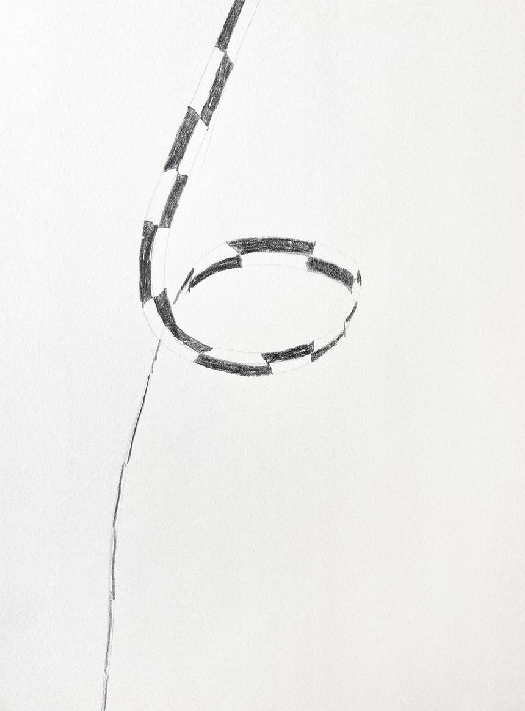
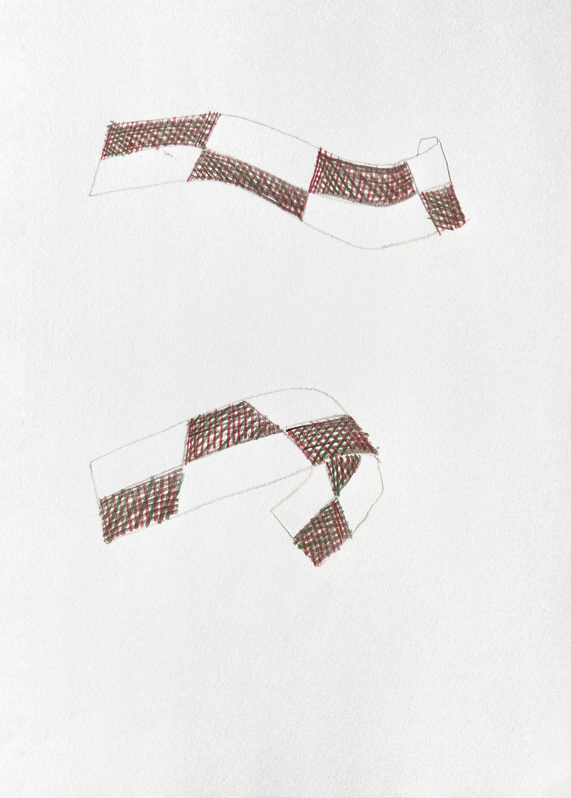
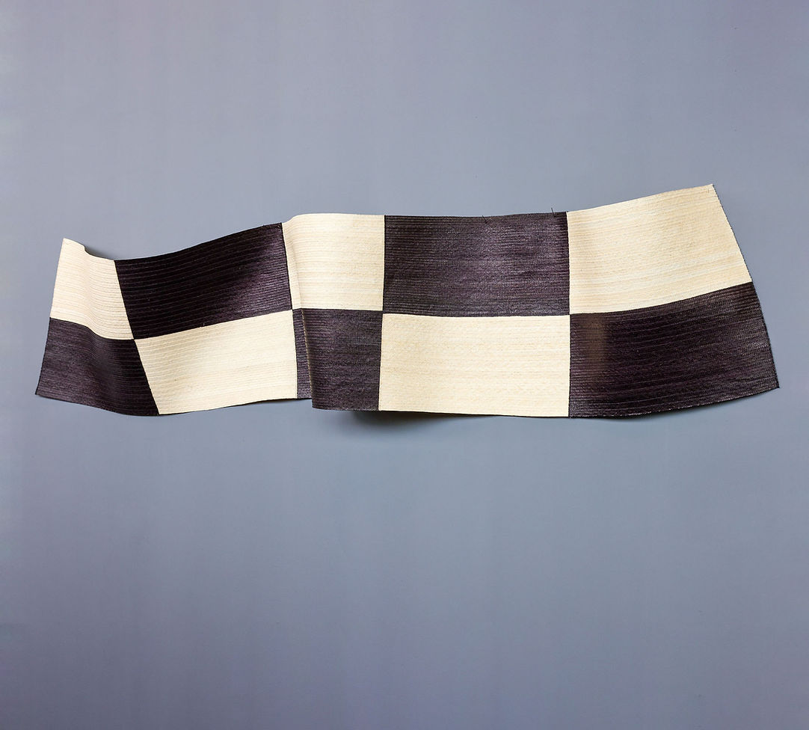
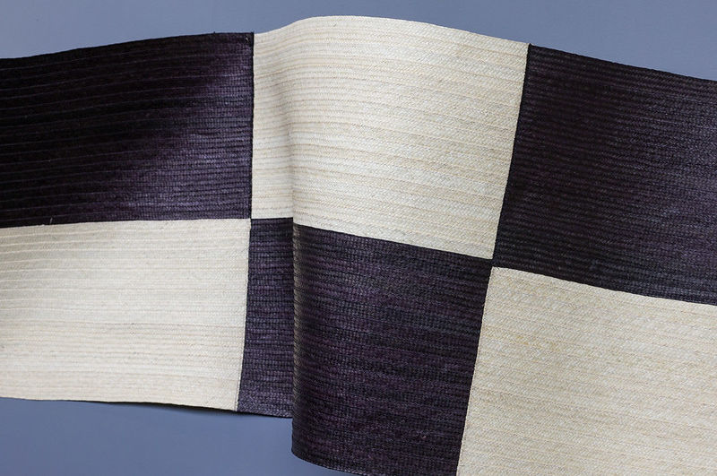
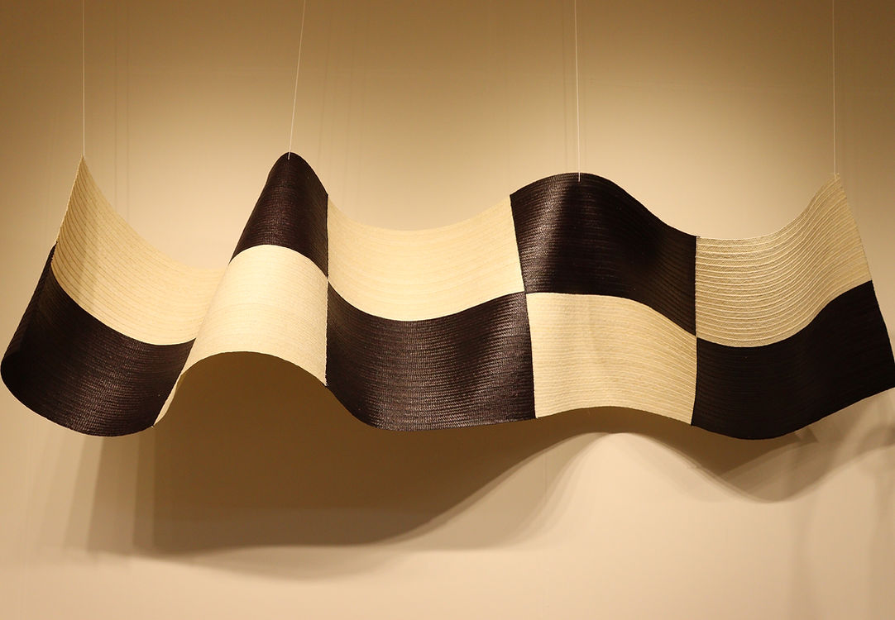

Medir el aire
Dibujo. Lápiz negro sobre papel.
25 de Septiembre - 25 de Diciembre 2025
Ágora centro de convenciones - Bogotá
“Atrapar, calar, tejer mitos”
Curaduría Arte vivo

Este proyecto surge de una colaboración con Víctor Otero y su madre, Élida Polo, artesanos del departamento de Sucre, Colombia y trabajan la técnica de la cestería en caña flecha.
Medir el aire propone una reflexión sobre los objetos de medición arqueológica, específicamente sobre la escala: un instrumento conformado por recuadros blancos y negros intercalados, que se coloca junto a los objetos para ofrecer al espectador una referencia de sus dimensiones.
Este objeto ha llamado mi atención desde hace tiempo, y en este proyecto se materializa a gran escala a través de la cestería. Es también una reflexión sobre la noción de medir en sí misma.
Al estar suspendida del techo, y como su nombre indica, Medir el aire alude más a un movimiento que a la medición de algo tangible. Al cambiar la materialidad y el lenguaje de este instrumento de medición, el proyecto sugiere un comentario sobre la aparente objetividad de las métricas estándar, abriendo la posibilidad de imaginar otras formas de relacionarse con el tiempo, el cuerpo, el peso y el espacio.
Esta pieza hizo parte de la muestra Atrapar, calar, tejer mitos, exhibida en ARTBO Feria Internacional 2025, en el Claustro de Las Aguas de Artesanías de Colombia, en la sala de exposiciones de la Facultad de Creación y Comunicación de la Universidad del Rosario, y en Expoartesanías Colombia 2025.
Dibujo. Lápiz de color sobre papel.



Tejido caña flecha, fibras naturales. 250 x 50 cms.